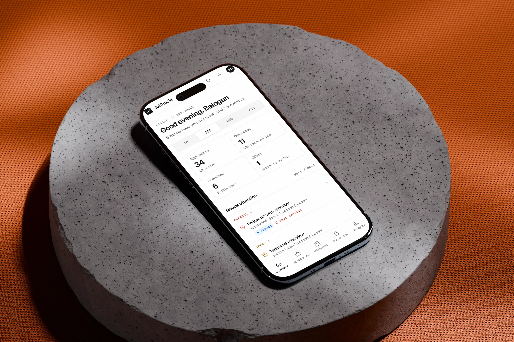
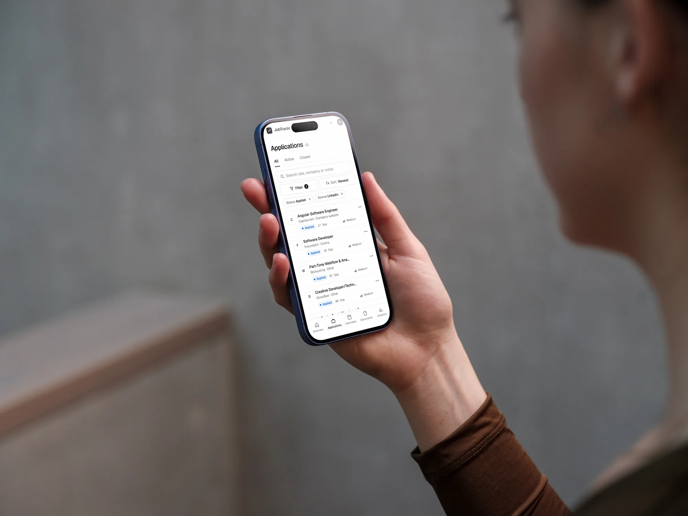
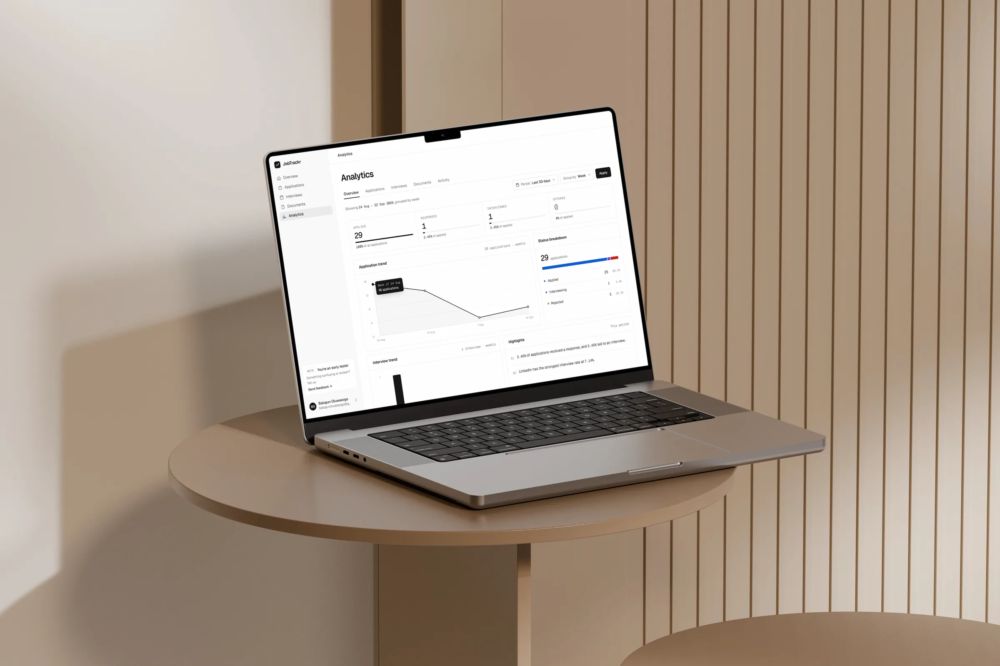
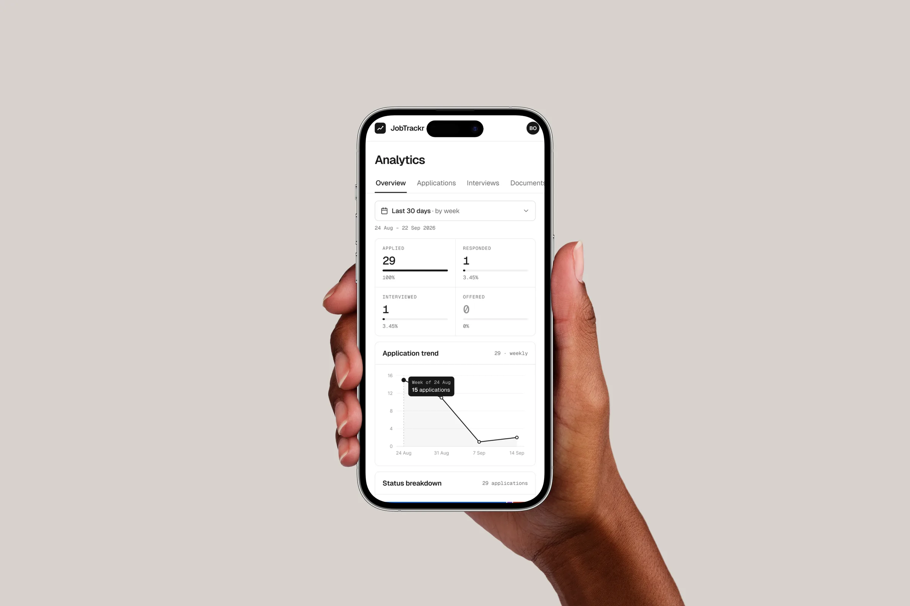
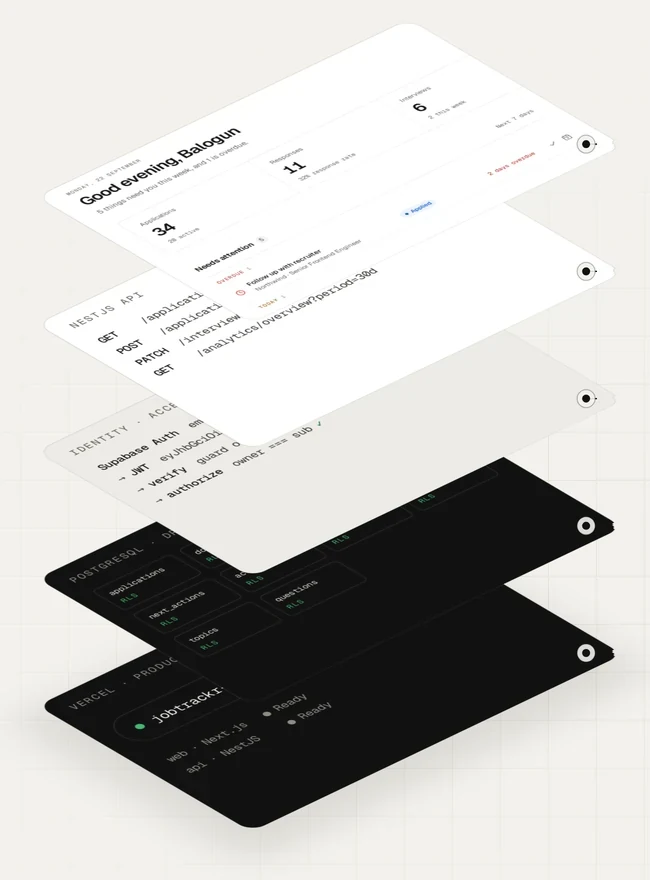

A job-search workspace, designed and built end to end.

The problem
Roles sit on LinkedIn, company sites and job boards. Replies arrive by email. Interviews happen weeks after the application, and each role wants a slightly different resume. After enough applications, it gets hard to say where anything stands.
Most job platforms help you find work, not manage what happens after you apply. I was keeping track in browser tabs, bookmarks and memory but that stopped working after several applications..
I wanted one place that could answer a simple question: what’s happening with my job search, and what should I do next? That question ended up on JobTrackr’s login screen.
Structure
Before designing screens, I mapped what actually happens during a search. An application is saved or sent, moves through assessments and interviews, and ends in an offer, a rejection or a withdrawal. Activity, next actions, interview preparation and documents all hang off that journey.
That gave the product five areas. Nothing was added as a standalone feature: everything had to serve the same journey.
The lifecycle
Any open application can also close as rejected or withdrawn.
Five areas
Overview
What needs you this week, and what’s overdue.
Applications
Every role with its status, history and next action.
Interviews
Stages, preparation, questions to ask and outcomes.
Documents
The resumes and letters you sent, linked to where you sent them.
Analytics
Whether the search is working, in numbers and in plain sentences.
Overview
The Overview opens with a sentence welcoming the user rather than a chart: “Good evening, Balogun. 5 things need you this week, and 1 is overdue.” Below it, everything that needs attention is grouped by when it’s due (overdue, today, this week) with the next step right on the row, from joining a call to ticking off a follow-up.
Totals, the pipeline and recent activity sit around it. Colour is kept for status and urgency, so it always carries meaning and nothing else competes for attention.
The Overview on desktop and mobile.
Applications
Applications are the centre of JobTrackr. Each one moves from saved to applied, assessment, interviewing and offer, or closes as rejected or withdrawn. The list can be searched, filtered by status and source, sorted and exported as CSV.
Opening one shows far more than a row: a progress line, the next action, an activity log, interviews, linked documents and notes. Status changes and interviews are written to the log automatically; anything else, like a recruiter reply or a follow-up, takes one entry.

One application’s record: overview, activity, interviews, documents and notes. On a phone, filters stay one tap away.
The decision
JobTrackr shouldn’t only record where an application is. It should keep how it got there, and what happens next.
Interviews
Once an application moves forward, the question changes from “where did I apply?” to “am I ready for this conversation?” Interviews became their own workflow, attached to an application.
Each stage has its time, a meeting link, a preparation checklist, topics to review, questions to ask, notes, feedback, and a history that logs reschedules and outcomes as they happen. One application can hold several stages, so a recruiter screen, a technical round and a final read as one process, not three unrelated calendar events.
Documents
Resumes, cover letters and other files live in one library and stay linked to the applications they went out with. Later, the useful question isn’t “what files do I have?” but “what did I send to this company?”
Analytics
With structured data underneath, JobTrackr can answer questions a spreadsheet hides: how many applications get a response, where the pipeline stalls, which sources lead to interviews. Analytics shows the funnel from applied to offered, weekly trends, a status breakdown and interview activity for any period.
The key numbers are also written out as sentences, such as which source has the strongest interview rate. The goal isn’t analytics for its own sake; it’s knowing when to change the strategy.


Architecture
The interface is Next.js with React, TypeScript and SCSS Modules. It talks to a separate NestJS API that owns the application logic: validation, business rules and who may touch what. Supabase provides the rest: Postgres for data (modelled and queried with Drizzle ORM), Auth for identity and Storage for documents.
Keeping the API separate puts every rule in one place the browser can’t skip, and lets the frontend concentrate on the experience. Both run on Vercel.

How a request travels. The frontend signs people in with Supabase Auth and calls the API with their token. The API verifies that token itself, then reads and writes only what belongs to that person.
Data model
The schema mirrors the product. An interview belongs to an application. Preparation items, topics and questions belong to an interview. A document can be linked to many applications. An offer comes from an application, and activity ties the history together.
Rules live in the model, not just the interface: an application has at most one offer and one pending next action, and every table has Row Level Security. Getting these relationships right early made the rest of the product much easier to build.
Process
Adding interviews wasn’t a matter of designing a screen. It was a chain of decisions, and the same chain repeated for every feature.
Working across every layer kept the build faithful to the product thinking, instead of treating design and development as separate phases.
Product decision
An interview belongs to an application, and one application can have many.
Data model
The interviews table references applications; preparation items, topics and questions reference interviews.
API
The NestJS API exposes interview operations, each one scoped to the signed-in user.
Interface
Scheduling, preparation and outcomes, including loading, empty and error states.
Feedback
Interviews flow back into the application’s activity, the Overview and the analytics.
Authentication
People sign in with Supabase Auth, by email and password or with Google. The Next.js app handles the session server-side, and the NestJS API verifies every request’s token itself, checking its signature against Supabase’s published keys before it touches any data.
Authentication was more than a login screen. OAuth callbacks, protected routes, session restore and the states people pass through before and after signing in all had to be handled.
Every request
Authenticate
Supabase Auth, by email or Google
Verify
The API checks the token’s signature
Authorize
The record’s owner must match the token
Return
Only that person’s data comes back
Security
With several people using JobTrackr, the walls between their data became part of the architecture. Knowing, or guessing, an application’s ID must never be enough to read it. So the API never treats an ID as permission: every protected operation checks that the record’s owner matches the user in the verified token.
I tested this with two accounts, requesting each other’s records directly by ID, to confirm neither could see the other’s. That closes the security issue of Insecure Direct Object Reference, or IDOR.
The two-account test
Signed in as
Asks for
Result
User A
User A’s application
Returned
User B
User A’s application, by its ID
Refused
Defence in depth
Supabase Auth
Establishes who the person is.
Token verification
The API validates each request’s JWT against Supabase’s signing keys.
Ownership checks
Decide whether this person may read or change this record.
Row Level Security
Database policies on every table, underneath the API.
The interface is never the security boundary. Hiding a button protects nothing; identity and ownership are enforced underneath it.
Stack
Design
Figma
Frontend
Next.js, App Router
React, TypeScript
SCSS Modules
Backend
NestJS
TypeScript
Database
Supabase Postgres
Drizzle ORM
Authentication
Supabase Auth
Google OAuth
JWT, verified with JWKS
Security
Ownership checks
Row Level Security
IDOR tests
Deployment
Vercel, frontend and API
Shipping
Once the core workflows worked end to end, I deployed the frontend and the API to Vercel, backed by production Supabase. That brought its own work: environment configuration, OAuth redirects for each environment, communication between frontend and API, and migrations written to keep existing data and file paths intact.
I didn’t want JobTrackr to stay a polished prototype. The clip below is a real session in production: saving a role from a LinkedIn posting, then opening its record.
Recorded in production on 24 September 2026, shown at 2x speed.
Beta
A small group of beta testers now use JobTrackr in their own searches, and the app carries an early-tester card that leads straight to feedback.
The beta isn’t only for finding bugs. It shows where my assumptions meet real behaviour: what feels obvious, what creates friction, what people ignore and what they expect to happen. That feedback shapes the next round of work.
Outcome
JobTrackr began as my own problem. Solving it meant owning the whole product, from the first sketch to the database policies.
I defined the structure, designed the experience, built the frontend and the API, modelled the database, implemented authentication and authorization, layered the security, shipped it and put it in front of real users.
It’s the kind of work I want to keep doing: taking a product from an idea to a working system, and owning the space between the two.
Product design · Frontend engineering · Backend engineering · Database design · Authentication · Security · Deployment · Testing · Iteration
Next project
Acetrail